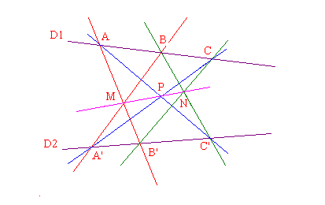

| Choisissez votre langue ! | Choose your language ! |
Pappus d'Alexandrie
Le paragraphe qui suit est extrait de l'encyclopédie wikipédia :Pappus d'Alexandrie vécut au IVe siècle après J.C. Actif vers 300, il est un des plus importants mathématiciens de la Grèce antique, connu pour son ouvrage Synagoge (traduit en français sous le titre de « Collection mathématique»). Il naquit à Alexandrie en Égypte. Bien que très peu de choses sur sa vie soient connues, les écrits nous suggèrent qu'il fut un précepteur. Son principal ouvrage est connu sous le nom Synagoge (vers 340 de notre ère). Il comprend au moins huit volumes, le reste a été perdu, la Collection couvre un grand nombre de rubriques mathématiques, incluant la géométrie, les mathématiques récréatives, la construction d'un cube du double d'un cube donné, de polygones et de polyèdres. C'est par Pappus que nous sont parvenues les sources les plus riches des mathématiques grecques, et que nous connaissons les titres et le contenu des grands traités de l'époque hellénistique (la Petite Astronomie, le Trésor de l'Analyse). Il introduisit la notion de rapport anharmonique. En géométrie, son nom est resté attaché de nos jours à deux théorèmes de géométrie plane.
L'un et l'autre peuvent s'énoncer de manière unique dans le cadre de la géométrique dite 'projective'.
La figure de base est formée de deux droites D et D' situées dans un même plan P. A,B et c sont trois points de D, A', B' et C' sont trois points de D'.
Le 'petit' théorème de Pappus
Pappus of Alexandria
The following paragraph is taken from the Wikipedia encyclopedia:Pappus of Alexandria lived in the 4th century AD. Active around 300, he is one of the most important mathematicians of ancient Greece, known for his work Synagoge (translated into French under the title of "Mathematical Collection"). He was born in Alexandria in Egypt. Although very little of his life is known, the writings suggest to us that he was a preceptor. His main work is known as the Synagoge (c. 340 CE). It comprises at least eight volumes, the rest have been lost, the Collection covers a large number of mathematical topics, including geometry, recreational mathematics, the construction of a cube of the double of a given cube, polygons and polyhedra . It is through Pappus that we have received the richest sources of Greek mathematics, and that we know the titles and content of the great treatises of the Hellenistic period (the Little Astronomy, the Treasury of Analysis). He introduced the notion of anharmonic ratio. In geometry, his name has remained attached to the present day to two theorems of plane geometry.
Both can be stated in a unique way within the framework of so-called 'projective' geometry.
The basic figure is made up of two straight lines D and D' located in the same plane P. A, B and c are three points of D, A', B' and C' are three points of D'.
Pappus' hexagon theorem
théorème 1
Si (AB') // (BA') et (BC') // (CB') alors (AC') // (A'C) .
theorem 1
If (AB') // (BA') and (BC') // (CB') then (AC') // (A'C) .
démonstration
La preuve est fondée sur la notion de(AB')//(BA') ⇒ ∃! f dilatation, telle que f(A)=B et f(B')=A'.
(BC') // (CB') ⇒ ∃! g dilatation, telle que g(B)=C et g(C')=B'.
Donc g of(A)=C et f og(C')=A'.
Mais alors soit D et D' sont parallèles, alors f et g sont des translations et commutentent, soit D et D' sont sécantes en un point S alors f et g sont des homothéties de centre S.
Dans les deux cas f og=g of=h est une dilatation.
Il en résulte que (AC') est parallèle à (CA').
proof
The proof is based on the notion of(AB')//(BA') ⇒ ∃! f dilation, such that f(A)=B and f(B')=A'.
(BC') // (CB') ⇒ ∃! g dilation, such that g(B)=C and g(C')=B'.
So g of(A)=C and f og(C')=A'.
But then either D and D' are parallel, then f and g are translations and commute, or D and D' are secant at a point S then f and g are dilation with center S.
In both cases f og=g of=h is a dilation.
It follows that (AC') is parallel to (CA').
Le 'grand' théorème de Pappus
Pappus' dual theorem
théorème 2
Si (AB') et (A'B) sont sécantes en M et si (BC') et (CB') sont sécantes en N alors (AC') et (A'C) sont sécantes en un point P situé sur la droite (MN).
theorem 2
If (AB') and (A'B) intersect in M and if (BC') and (CB') are secant in N then (AC') and (A'C) are secant in a point P located on the line (MN).

démonstration
Marquons 3 nouveaux points :
- X est le point où (AC') rencontre (BA')
- Y est le point où (CB') rencontre (BA')
- Z est le point où (AC') rencontre (CB')
Les alignement de {C',B,N}, {A,B',M} et {A',C,P}
Multiplier les égalités résultantes --> résultat p
Appliquer le théorème de Menelaüs pour le triangle XYZ traduisant :
Les alignements de {A,B,C} et {A',B',C'}
Multiplier les égalités résultantes --> résultat q
Faire le quotient p/q et simplifier.
Vous obtenez l'alignement de M,N et P par Menélaüs encore.
proof
Let's mark 3 new points:
- X is the point where (AC') meets (BA')
- Y is the point where (CB') meets (BA')
- Z is the point where (AC') meets (CB')
The alignments of {C',B,N}, {A,B',M} and {A',C,P}
Multiply resulting equalities --> result p
Apply Menelaüs' theorem for the triangle XYZ translating:
The alignments of {A,B,C} and {A',B',C'}
Multiply resulting equalities --> result q
Make the quotient p/q and simplify.
You get the alignment of M,N and P by Menelaus again.
Pappus interactif
Voici une appliquette qui vous permet de visualiser le petit théorème de Pappus.
Vous pouvez tirer-déplacer les points A,B,C, A' en rouge sur le graphique.
Interactive Pappus
Here is an applet that allows you to visualize Pappus' hexagon theorem.
You can drag-and-drop points A,B,C,A' in red on the graph.
Voici une appliquette qui vous permet de visualiser le grand théorème de Pappus.
Vous pouvez tirer-déplacer les points A,B,C, A',B',C' en rouge sur le graphique.
Here is an applet that allows you to visualize Pappus' dual theorem.
You can drag-and-drop points A,B,C, A',B',C' in red on the graph.
|
Création Gilles Dubois - licence CC-BY-SA
Created by Gilles Dubois - licence CC-BY-SA
|
Septembre 2023
September 2023
|
Version mobile Jquery
Mobile Jquery version
|
|